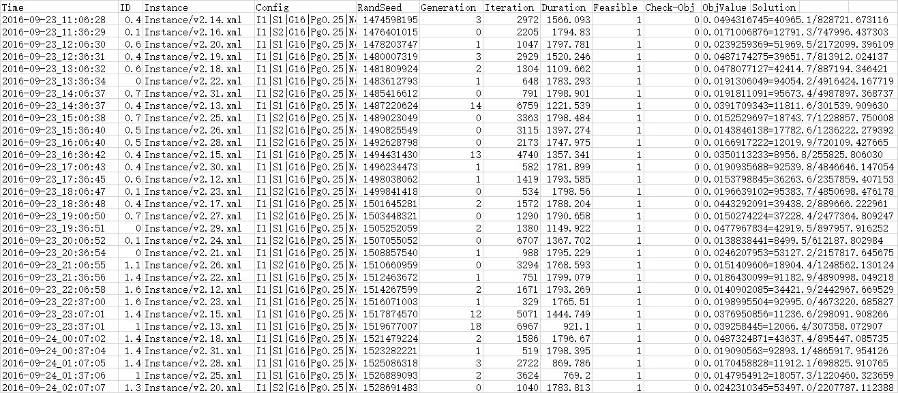
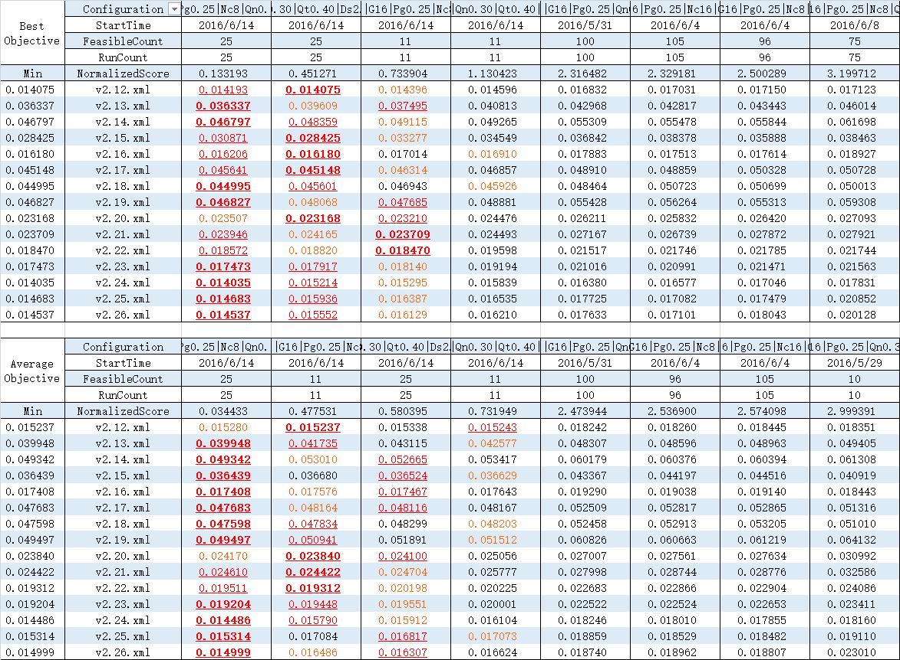

组合优化 (四) 算法工程
算法研发和常规软件开发十分相似, 但也有很多区别. 大多数工程项目往往更注重正确性, 为了提升代码的健壮性与可维护性, 可以适当牺牲性能. 而设计精妙的高效而复杂算法代码往往具有极高的耦合度, 难以进行系统的单元测试. 此外, 算法面临的需求往往不那么简单直接, 不是梳理清楚了业务逻辑就能欢快地敲代码了的. 算法研发真的这么任性吗?
软件工程
文档
- 需求分析
- 相关技术调研
- 自然语言描述
- 基本概念定义
- 建模四要素
- 输入输出数据约定
- 用户手册
- 概要设计
- 接口定义
- 功能覆盖
- 算法设计
- 技术规范
- 模块划分
- 处理流程
- 测试分析
- 测试环境
- 测试用例
- 测试结果
- 正确性分析
- 优度分析
- 速度分析
算例设计
- 格式要求
- 自文档
- 跨平台
- 推荐格式: protobuf, json
- 结构和规模可控
- 拓扑设计
- 特殊结构: 树形, 窄总线型, 宽总线型, 关键节点, 局部密度高整体密度低, 有向无环图
- 部分边权重特别大 (出现整数上溢)
- 拓扑设计
算法工程
相关工具
版本控制工具
- git (主流)
- svn
- mercurial
适合与版本控制工具配合使用的文档撰写工具
- Markdown
- 一种功能非常精简的标记语言
- https://guides.github.com/features/mastering-markdown/
- LaTeX
- 功能强大的标记语言
- 同样适用于科技论文写作
数学规划求解器 -- 完成需求分析即完成项目!
开发
代码可读性
- 使用版本控制减少被注释掉的代码 (文档性注释不受该要求影响)
- 使用有具体意义的单词作为标识符以减少臃肿的注释
- 使用自动排版工具调整代码格式
- 合理的功能模块划分和封装以避免过长的函数 (但是有时真的无法避免)
自动化测试
- 使用配置文件
- 方案选择 (使用配置文件将导致代码过于臃肿时可以考虑预处理语句)
- 参数设置
- 算例选择
- 建议使用json文件格式
- 自动批量测试
- 计算结果合法性检验
- 计算结果目标函数值正确性检验
- 独立重复运行
- 多个算例
- 多个配置
- 多线程 (注意写同一个日志文件时应加入互斥机制)
- 运行日志
- 原始日志
- 能够评价每次运行的时空开销与解的质量
- 能够还原求解过程和结果 (随机种子, 运行时间, 迭代次数, 宏开关状态, 参数设置...)
- 建议使用csv文件进行组织
- 初步加工
- 多阶段问题整合各阶段的数据得到整个周期的结果
- 举例 
- 原始日志
- 结果分析
- 初步统计
- 极值, 均值, 方差, 耗时...
- ClosedXML编辑xlsx文件
- 对比分析
- 在所有算例上的综合评价方案/参数好坏的策略
- Excel条件格式, 排序, Excel录制宏
- 举例 
- 初步统计
算法工程模块清单
- 通用
- 验证程序
- 合法性
- 目标函数值计算正确
- 日志记录
- 统计分析
- 验证程序
- 求解器
- 数学模型
- 编程实现
- 启发式
- 初始解
- 随机
- 贪心
- 局部搜索
- 邻域评估
- 增量评估
- 邻域动作目标函数增量缓存
- 邻域动作优先队列
- 邻域动作选择
- 邻域动作执行
- 邻域评估
- 禁忌策略
- 禁忌表
- 解禁策略
- 扰动策略
- 初始解